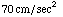
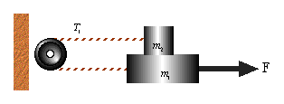
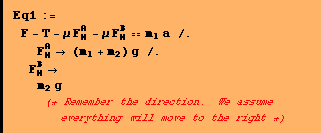
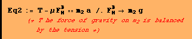
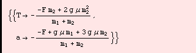
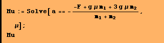
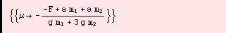

Question #8
If F is 1.3N and a is what is the coeficient of friction. The coefficient is the same for the top and bottom.

To solve this we need only calculate the acceleration (the tension we get for free)




